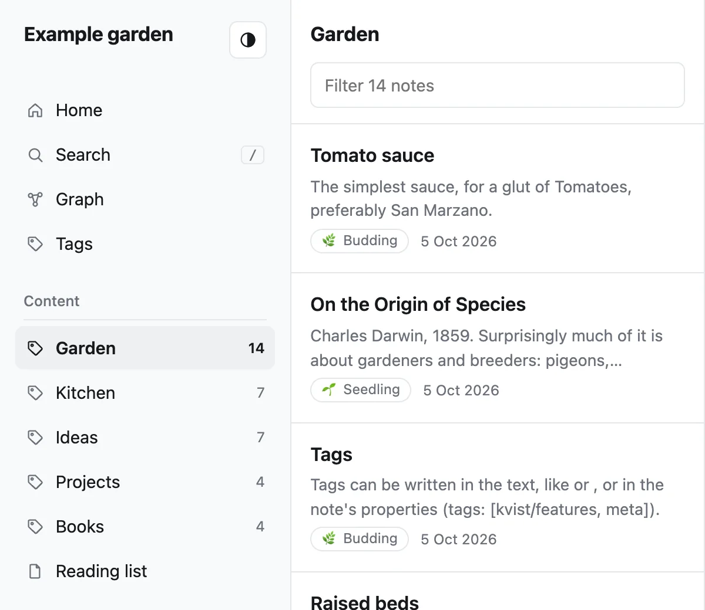
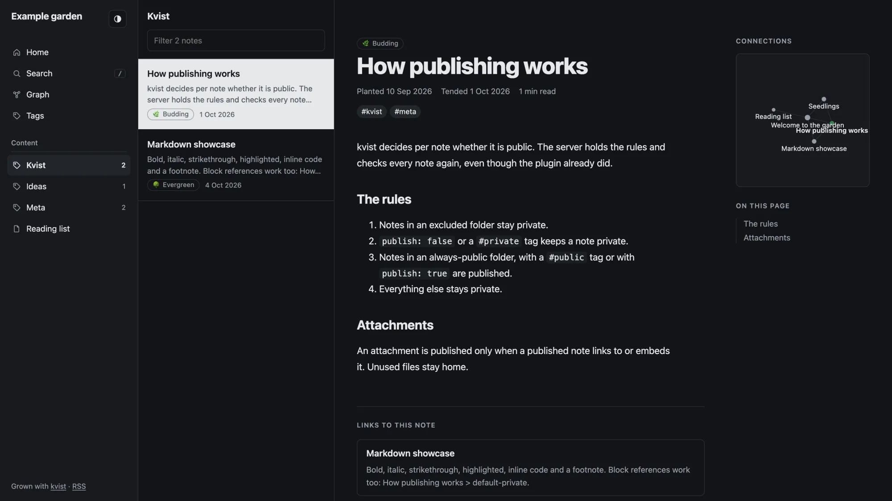
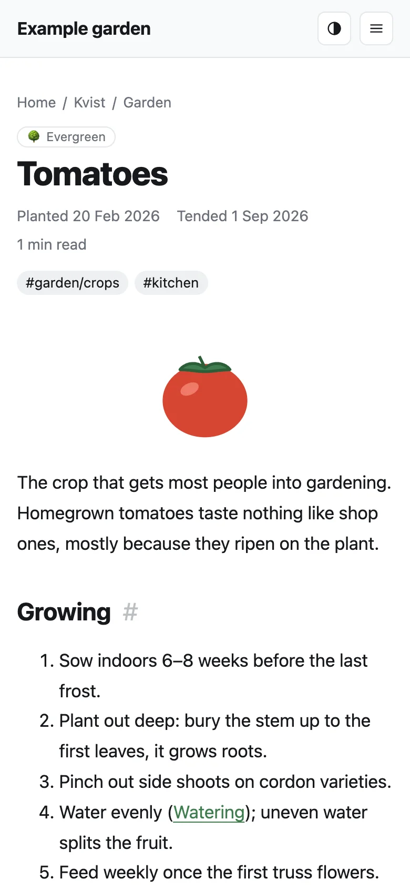
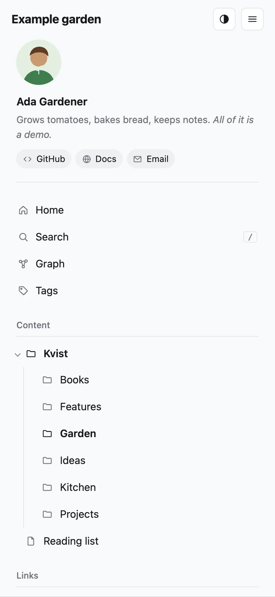

Guides
Customizing the site
How your site looks is set in one note in your vault, _site.md. Edit it in Obsidian on any device, publish, and the site follows.
The settings note
The settings note is a note called _site.md vault. It can be in any folder; the plugin creates it next to your public notes, as Kvist/_site.md. It is never published as a page, even inside a public folder. Open it, or create it, with kvist: Open site settings note.
---
title: Ada's garden
description: Notes on what I'm learning and building
author: Ada
language: en
home: "[[Welcome]]"
groups: [articles, projects, books]
accent: "#8a4f9e"
footer: © 2026 Ada · [Contact](mailto:ada@example.com)
---
Settings for my website.
## Links
- [About](/about/)
- [[Reading list]]
- [Mastodon](https://mastodon.social/@ada)Settings are the note's properties, so you can edit them in Obsidian's property editor. Leave a property empty to keep its default.
| Property | What it does |
|---|---|
title | Site name, shown top left and in browser tabs. |
description | Shown under the title on the home page and in link previews. |
author, language | Used in page metadata and feeds. language is a code like en or sv, and it also sets the language of the site's own words (menu, dates, search). The built-in theme speaks English, Swedish (sv), German (de), French (fr) and Spanish (es); other languages show English. |
home | A published note to use as the home page, as a link: "[[Welcome]]". Obsidian keeps it up to date if you rename the note. |
groups | Tags that group the menu (below). |
avatar, bio, profile_links | A profile at the top of the menu (below). |
image | The picture shown when a page is shared on social media or in chats, unless the note has its own image or cover: "[[preview.png]]" or a web address. About 1200×630 pixels works everywhere. |
favicon | The small icon in browser tabs and bookmarks: "[[icon.png]]" or a web address. A square PNG or SVG of at least 64×64 pixels. Without it, the theme shows a green sprout. |
analytics, analytics_id, analytics_url | Visitor statistics with Plausible, Umami or GoatCounter (below). |
strict_line_breaks | true to treat a single line break as a space, like Obsidian's Strict line breaks. By default it is kept as a line break. |
| Anything else | A theme setting, such as accent or footer. See Theme settings. |
Menu links come from the note's text: each list item that is a single link becomes a link under Links in the menu, in order. Links can go to other websites (they get an arrow), to addresses on your site like /about/, or to published notes with [[wikilinks]] or [text](Note.md). A link to a note that isn't published is left out, with a warning in the publish report. Other text in the note is ignored, so you can keep notes to yourself there.
Publish rules, the theme and the site's address can only be set on the server, so a synced vault can't change what's public. If the settings note tries, the publish report shows a warning.
Only one settings note
If the vault has two notes called _site.md, publishing stops and names both, so you can delete one.
Older sites may use a hidden .kvist/site.toml file instead. It still works, and the settings note wins where both set something. See Configuration.
A profile in the menu
Add a picture, a line about yourself and your links to the top of the menu:
---
author: Ada
avatar: "[[ada.jpg]]"
bio: Notes on what I'm learning and building.
profile_links:
- https://github.com/ada
- https://mastodon.social/@ada
- mailto:ada@example.com
- Blog: https://ada.example.com
---avatar(orlogo) is an image in your vault, or a web address. It is published even though no note shows it, unless it sits in an excluded folder.biois a line of Markdown shown under your name (author).profile_linksis a list of addresses. GitHub, GitLab, Mastodon, Bluesky, LinkedIn, X, YouTube and email links are named for you; writeName: https://…or[Name](https://…)to choose the label. Only web andmailto:addresses are kept.- The links carry
rel="me", so Mastodon can show your site as verified once you link to it from your Mastodon profile.
Turn the profile off without deleting it with the theme setting show_profile: false.
Grouping the menu by tags
The menu's Content section shows your folders as a tree: the arrow next to a folder opens it, and the folders around the current page are open already. If you keep all public notes in one folder, the tree starts with a single “Kvist” folder, which says little to visitors. Group notes by tags instead:
---
groups: [articles, projects, books]
---
Then tag each note, either in the text (#articles) or in its properties (tags: [articles]). Now:
- The menu shows Articles, Projects and Books, in your order, each with a note count.
- Clicking one lists its notes in the middle column.
- On a note, the middle column shows the other notes in its group, and the group is highlighted.
- The home page shows a card per group.
Some details:
- Child tags count: a note tagged
#projects/kvistbelongs to Projects. - A note with two group tags appears in both groups. On its own page it uses the one listed first in
groups. - Notes without a group tag are still published. Their page shows their folder in the middle column instead.
- A group with no published notes yet is left out of the menu.
- The label is the tag with a capital first letter:
articlesbecomes “Articles”.
The layout
The built-in theme, garden, has three columns on a computer screen:

- Menu: Home, Search, Graph, Tags, your folder tree or groups, and your links.
- List: the notes around the current page, with a filter box. On the home page, the most recently updated notes.
- Note: the page itself, with backlinks at the bottom. On wide screens, the table of contents and a small graph of connected notes sit beside it.
On a phone, the menu folds into a button at the top, and the list moves below the note. Visitors can switch between light and dark with the button next to the title; by default the site follows their system setting.


Theme settings
Add these as properties of the settings note vault, or under the site's [site.theme_params] in kvist.toml server. The note wins if both set one. Colors start with #, so write them in quotes in the properties: accent: "#8a4f9e".
| Setting | Default | What it does |
|---|---|---|
accent | "#3f7d4e" | Color of links and highlights. |
groups | [] | Tags that group the menu (above). Empty: folders. Older configs call it nav_tags, which still works. |
show_list | true | Show the middle list column. |
list_max | 100 | Notes in the list before a “more…” link. |
home_recent | 12 | Notes in the home page's “Recently tended” list. |
date_format | "2 Jan 2006" | How dates look. Write the date 2 January 2006 the way you want dates shown, e.g. "2006-01-02" or "Jan 2, 2006". Month and day names follow language. |
show_toc | true | The “On this page” contents beside notes. |
show_breadcrumbs | true | The note's folders above its title, like Home / Recipes / Soups, each a link to its folder. |
show_backlinks | true | “Links to this note” at the bottom of notes. |
link_previews | true | Hovering a link to another note shows a preview. On a phone, the first tap previews, the second opens the note. |
graph_orphans | true | Show notes without any links in the graph. |
graph_tags | false | Show tags as nodes in the graph, connected to their notes. |
graph_node_size | "links" | "links" makes well-linked notes bigger; "same" draws every note the same size. |
graph_link_distance | 45 | Length of the links in the graph. A larger number spreads it out. |
show_profile | true | Show the profile, if the settings note has one. |
show_properties | false | A list of the note's properties under its title. Only properties the server lists in expose_frontmatter server are shown; all others stay private. |
show_graph | true | The Graph button and the small graph beside notes. |
footer | "" | Text at the bottom of the menu. Markdown works. |
code_style_light, code_style_dark | "github", "github-dark" | Code highlighting styles. |
mermaid_url | jsDelivr | Where diagrams' Mermaid script comes from. It's large, so it isn't bundled and loads only on pages with a diagram. To serve it yourself, put a copy in the theme overrides folder and give its name, like "vendor/mermaid.min.js", and set mermaid_integrity to its hash or to "". |
Growth stages
Digital gardens often mark how finished a note is. Add stage: seedling, budding or evergreen to a note's properties, and the site shows 🌱, 🌿 or 🌳 next to it. This needs expose_frontmatter = ["stage"] in the server's [site.publish], which the default config already has.
Visitor statistics
To count visitors, choose one of three privacy-friendly services in the settings note. None of them set cookies, so no cookie banner is needed.
---
analytics: plausible
analytics_id: garden.example.com
---analytics | analytics_id |
|---|---|
plausible | The site's domain, as you added it in Plausible. Without it, the domain of your site's address. |
umami | The website ID from Umami's settings, like 94db1cb1-74f4-…. |
goatcounter | Your GoatCounter code: ada for ada.goatcounter.com. |
If you run the service yourself, set analytics_url to its script, for example https://stats.example.com/js/script.js; for a self-hosted GoatCounter, analytics_id is its count address, https://stats.example.com/count. Addresses must start with https://. A setting kvist can't use is left out with a warning in the publish report, and analytics: none turns counting off. The same settings work in the server's [site.theme_params].
Going further
To change more than these settings, you can replace individual theme files, or write a whole theme. Both are done on the server; see Writing a theme.